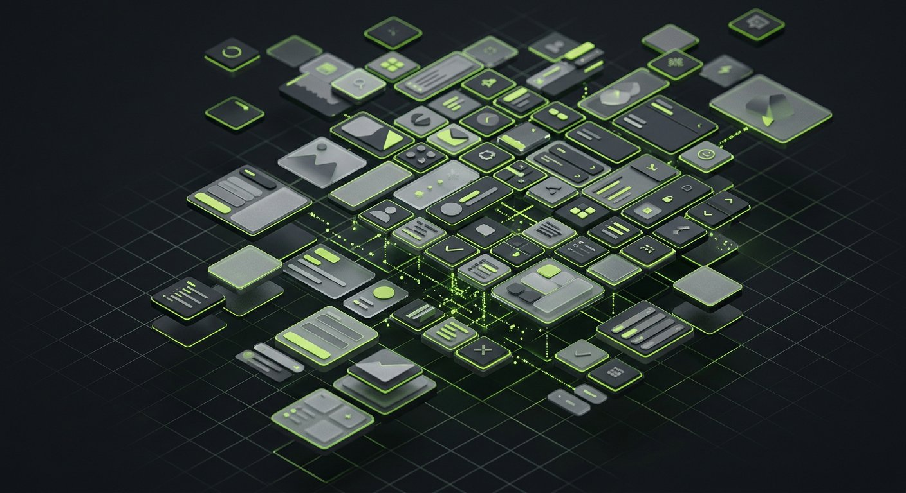

Atlas
Nine product teams, one source of truth, zero “which blue is it?” threads.

Overview
Atlas is the design system of a Scandinavian SaaS group. I joined as design engineer to rescue three incompatible component libraries and left behind a token pipeline, 120+ documented components, and an adoption model based on making the right thing the easy thing.
The Challenge
The company had grown by acquisition: nine teams, three frameworks, and a Figma library nobody trusted. Redesigning was easy — getting nine roadmaps to converge without a mandate was the real project.
The Process
Automate trust
Design tokens flow from Figma variables through a build pipeline to code. Designers and engineers finally read from the same page — literally.
Win the loudest skeptics first
We onboarded the two busiest teams early and let their complaints shape the API. Their success stories did the rest of the evangelism.
Docs people actually read
Every component ships with live examples, do/don’t pairs, and copy-paste snippets. Documentation is treated as a product with its own roadmap.
The Outcome
Component adoption reached 94% of new UI within eight months. Design-to-dev handoff meetings dropped to near zero, and accessibility issues in production fell by more than half.
Next ProjectAtlas is the first system here that slows nobody down.
Staff engineer, payments team